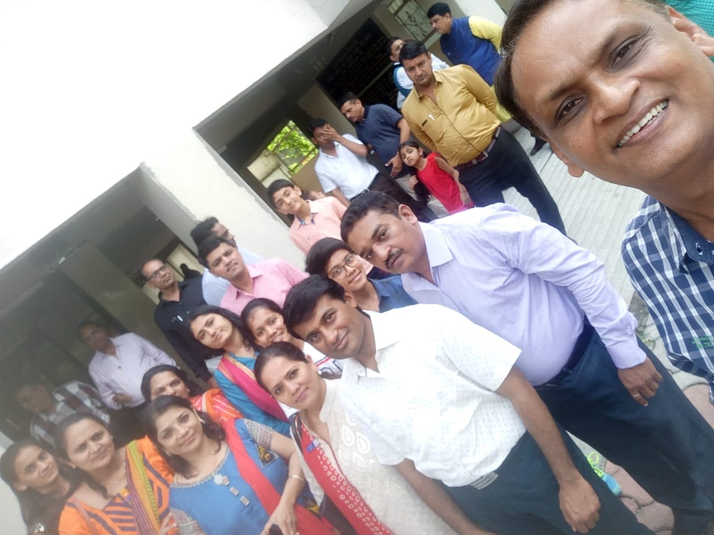
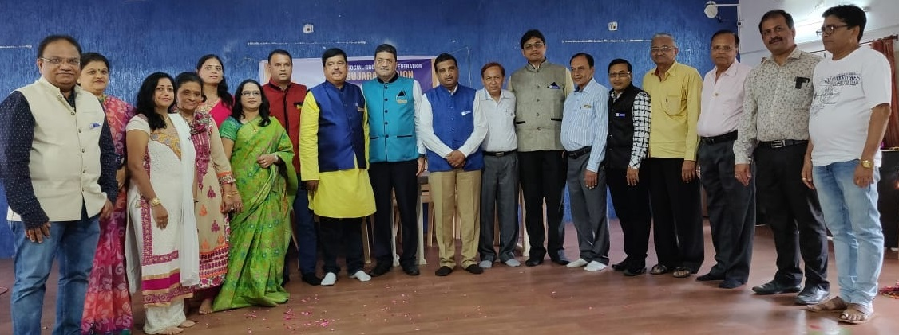
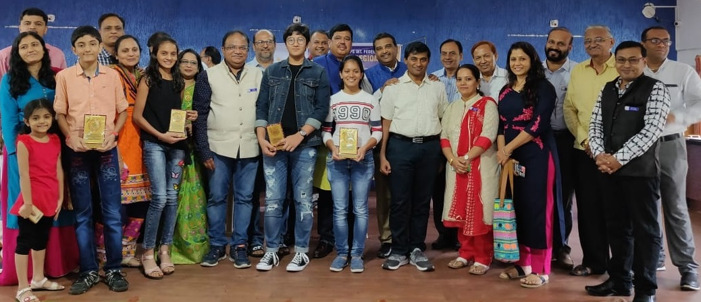
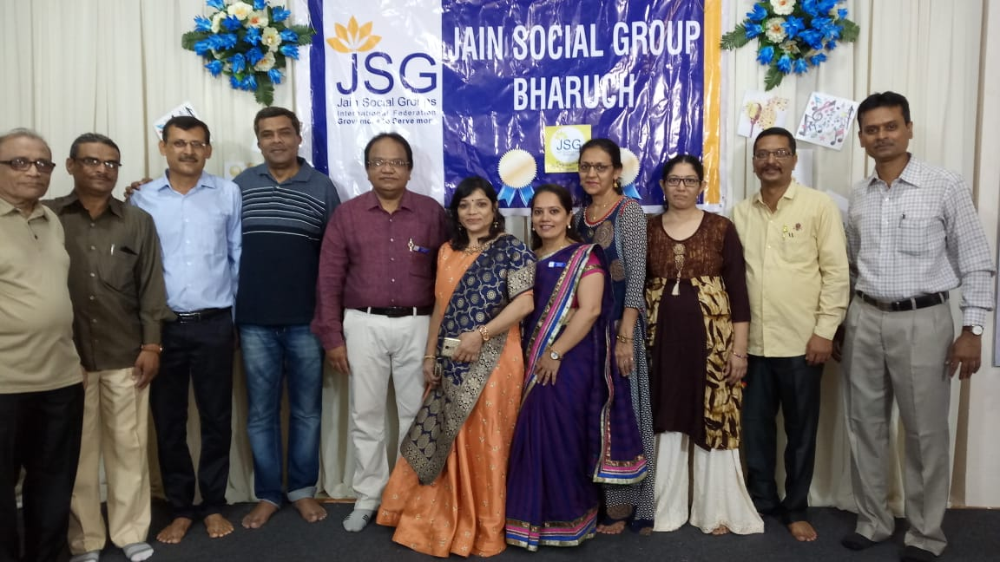

JSG TV
  Dear friends ☺JJ
Wat an amazing n memorable day it was at Surat for Reg level Elocution competition n Students Felicitation ☺
With 23 members from JSG Bharuch which included 8 Participants, 1 student for felicitation, Supportive Parents, Enthusiastic President Mr. Jayen Gandhi n First Lady Mrs. Pallavi Gandhi, Reg Sec. Mr. B. K. Shah n Sangini Co ordinator Mrs Toral Shah..
We hd maximum entries in Elocution competition n bagged max prizes too... ☺☺
It ws a proud moment for the Team n parents to get our children felicitated at region level ☺
Hope we have such wonderful involvement in all the programmes of our group n at region level ☺
Ty al the members for ur participations n presence in huge nos ☺
Kavita Shah
Secretary
Sparkling Stars Felicitation,Voice of JSG Bharuch &Charter day ત્રણ પોગ્રામ નું સુંદર આયોજન બદલ આપણા ગ્રુપ ના પદાધીકારીઓ ને ખાસ ખાસ અભિનંદન
રીજીયન અને ફેડરેશન તરફથી ૧૧ પોસ્ટ ઉપર આપણા ગ્રુપ ના સભ્યો ની નિમણુંક થઈ છે. સૌને અભિનદંન અને રી.ચેરમેન શ્રી ચીરાગ ચોકશી અને સેક્રેટરી શ્રી બી.કે.શાહ નો આભાર
ફેડરેશન ની ગાઈડ લાઈન મુજબ વર્લ્ડ યોગા વીક ની ભાગરુપે યોગા ડે ના આયોજન માં ૧૨૦ સભ્યો એ હાજરી આપી સ્નેહલતાબેન અને સમીર માસ્ટર ના સફળ આયોજન ને વધાવ્યું હતું ડો. દંપતી સુનીલભાઈ અને તૃપ્તીબેન નો આ પોગ્રામ સ્પોનસર કરવા બદલ આભાર
રીજિયન અંતાક્ષરી હરીફાઈ માં ચિરાગ, ડિમ્પલ, ધ્રુવ અને કેશા દોશી એ ભાગ લઈ સેમિ ફાઈનલ સુધી પોંહચવામાં સફળ રહ્યા હતાં
JSG-BHARUCH NEWS PORTAL આપણા ગ્રુપ ની માહિતી સરળતાથી સહુ ને મળી રહે તેવા ઉદેશ શરુ કરેલ છે. આપણા આવનારા કાર્યક્રમ ની જાણકારી અંહિ જોવા મળશે તો યોજાઇ ગયેલા પોગ્રામ ની ઝાંખી પણ અંહી ઉપલબ્ધ કરાવીશુ. આપ સહુ પણ આ ન્યુઝ પોર્ટલ ને વધુ ઉપયોગી અને રસપ્રદ બનાવાવા શું કરવું જોઈએ તે વિચારશો અને આપના સજેશન જણાવશો.
જૈન સોશ્યલ ગ્રુપ,ભરુચ સંચાલિત AJM Women Empowerment Project ની શરુઆત ૩૦ મે ૨૦૧૪ ના રોજ થઈ હતી. ગ્રુપ ના ફાઉન્ડર પ્રેસીડન્ટ શ્રી કમલેશભાઈ ઉદાણી ની દિર્ઘદ્રષ્ટી થી સમાજની જરુરિયાતમંદ મહિલાઓને સ્વનિર્ભર કરવા માટે આ કાયમી શરુ કરવામાં આવ્યો. શ્રીમતી અનસૂયાબેન જે મોદી ચેરીટેબલ ટ્રસ્ટ ના સપોર્ટ થી જૈન સોસ્યલ ગ્રુપના બહેનો ની મહેનત થી આ પ્રોજેક્ટ શ્રી ગિરિશભાઈ ના અનુભવી ચેરમેનશીપ હેઠળ કો. ચેરમેન શ્રીમતી કેતકીબેન મહેતા અને શ્રીમતી તોરલબેન શાહ ની રાહબારી હેઠળ સફળતા પૂર્વક ચાલી રહ્યો છે. જેમાં ટેલરીંગ, ફેશન ડિઝાઈન, કેટરીંગ, બ્યુટી પાર્લર, કોમ્પ્યુટર, ધો-૧૦ ના ફેઈલ સ્ટુડંટ માટે ટ્યુશન, કેરોયાટિક સેવા અને તાજેતર માં મોટર ડ્રાઈવીંગ ક્લાસ જેવા વિવિધ કોર્ષ ચાલું છે. અત્યાર સુધી ૧૮૦૦ થી વધુ મહિલાઓ એ આનો લાભ લીધો છે અને પોતાના સ્વતંત્ર વ્યવસાય કરીને પોતાના કુટુંબને મદદરૂપ થાય છે.
બંધુત્વ સે પ્રેમને વરેલા જૈન સોશ્યલ ગ્રુપ, ભરૂચ કાર્યરત થયે 34 વર્ષ થયા. શરૂઆતના પ્રથમ દિવસથી જ સફળતાના શિખરો સર કર્યા છે. દશાબ્દી, દ્વિદશાબ્દિ, ત્રીદશાબ્દિ ઉજવી ચુકેલા ગ્રુપને 2003 માં એક વિચાર આવ્યો કે અત્યાર સુધી જે પણ કર્યું તે આનંદ ઉલ્લાસ માટે જ કર્યું. બીજા માટે પણ કાંઈ કરવું જોઈએ! બસ આ જ વિચારના બીયારણે મૂંગા પશુઓ માટે કંઈક કરવાનો વિચાર જગાવ્યો. જેએસજી ભરૂચે પશુપાલન વિભાગ, જિલ્લા પંચાયત ભરૂચના સેવાભાવી તબીબો અને ટેકનિકલ સ્ટાફની મદદથી 14-12-2003, રવિવારના રોજ પ્રથમ નિશુલ્ક પશુ આરોગ્ય મેળાનું ભરૂચ માં આયોજન કર્યું જેનો સંપૂર્ણ ખર્ચ શેઠ શ્રી કેસરીચંદ દલિચંદ શ્રોફ પરિવારે ઉઠાવ્યો હતો. આમ પણ જૈન નામે કરૂણાસભર, દાનવીરો મળતા ગયા અને પશુ આરોગ્ય મેળા થતા ગયા. સમયના વહેણ સાથે 35થી વધુ પશુ આરોગ્ય મેળાનું આયોજન વાલીયા, ઝઘડિયા, નેત્રંગ, સાગબારા, ડેડીયાપાડા અને જંબુસર તાલુકાના જરૂરિયાતમંદ ગામોમાં થતું રહ્યું. અનેક પશુ આરોગ્ય મેળામાં આશરે 15000 થી વધુ મૂંગા પશુઓની જરૂરી સારવાર કર્યાનો સંતોષ મેળાવ્યો છે. વહેલી સવારનો તડકો છાયડો જોયા વગર કેમ્પના સ્થળે પહોંચી જવાનું પ અને સ્થાનિક લોકોના સહકારથી સેવામાં લાગી જવાનું. કોઈપણ પ્રકારની અપેક્ષા વગર એક વાગ્યે પશુઓની સેવા કરી પરત ફરવાનું આજ અમારી કાર્ય પ્રણાલી
હૃદયસ્પર્શી એક શુભ પ્રસંગ કહું તો
ભરૂચ જિલ્લાનું સૌથી છેલ્લુ ગામ એટલે ધાણીખુન્ટ, લગભગ બે વાગ્યાના સુમારે તબીબો અને સ્ટાફ સેવા કરીને માંડ રાહતનો શ્વાસ ખેંચતા હશે ત્યાં એક લઘરવઘર હાલતમાં, ફાટેલા કપડા, અડધી ઘસાઈ ગયેલી સ્લીપરમાં જુવાનીયા એક બળદ લઈને આવ્યા. બળદ પણ કેવો ? ગાંડાની જેમ તોફાને ચઢેલા,જ્યાં ને ત્યાં શીંગડા ઘસે, લાઈટના થાંભલા પર માથું પટકે અને તોફાનો કરે. ડોકટરે જોઈને જ કહ્યું કે મયુરભાઈ શિંગડાનું કેંન્સર છે શિંગડું ઓપરેશન કરી કાઢી નાખવું પડશે. લાબું કામ છે દવાખાને બોલાવી લઈશ. નવયુવાન કરગરવા લાગ્યો. 15 કિમિ ચાલી ને કૅમ્પમાં આવ્યો હતો. ડોક્ટરને કરુણા જાગી અને જમવા માટે ધોયેલા હાથે ફરી ઓપરેશન ના ઓજારો પકડ્યા, દોઠ કલાક ની મથામણ પછી ઓપરેશન સફળ થયું. ત્યારબાદ નજીકના ખેતરમાં નિરાંતે તે જ બળદ ઘાસ ખાઈ રહ્યો હતો. એક પીડા રહિત જાનવર ને જોઇને અમારી આંખમાં હર્ષના આંસુ આવી ગયા.
પશુ આરોગ્ય મેળા ના આયોજન અર્થે અમે સૌ દેડિયાપાડા તાલુકાના ડુંગરાળ પ્રદેશના ડબકા ગામે ગયા હતા. ડોક્ટરે કહ્યું કે આ ડુંગરાળ પ્રદેશ હોવાથી વરસાદી ખેતી થાય છે ઉપજ પણ ખાસ નથી. વરસાદી પાણી પણ વહી જતું હોવાથી હોળી પછી અહિયા ઘાસચારો તથા પાણીની તંગી વર્તાય છે. ખાબોચિયાનું પાણી પીવાથી પશુ રોગગ્રસ્ત અને ઘાસચારો ન મળવાથી અશક્ત થતું જાય છે. જેવો પહેલો વરસાદ પડે કે તરત જ માલિક અસક્ત પશુ પાસે ડુંગરાળ જમીનનું ખેડાણ કરાવે છે ત્યારે કામ કરતા કરતા નસો ફાટી જવી, આંખ કાનમાંથી લોહી નીકળવું વગેરે કારણોથી મૃત્યુ પામે છે.
જો આપણે તેને બે મહિના માટે પૂરક આહાર આપી શકીએ અને તે બે મહિના ટકી જાય તો કદાચ મૃત્યુ આંક ઘટાડી શકાય. બસ આ જ વિચારધારા એ અમારા પશુ નિર્વાહ પ્રોજેક્ટ કામધેનુ ને જન્મ આપ્યો. નિષ્ણાત ડોક્ટરોની મદદથી અમો એ સમતોલ પશુ નિર્વાહ કીટ તૈયાર કરાવી અને વર્ષ 2012માં નર્મદા જિલ્લાના દેડિયાપાડા તાલુકાનાં બે જરૂરિયાતમંદ ગામો નક્કી કર્યા અને 215 ગરીબ ખેડૂતોને કિટનું વિતરણ કર્યું. મંથાવલી ગામમાં ગયા ત્યારે બધા ના મુખે થી એક જ શબ્દો સરી પડ્યા અહીંયા તો ભગવાન સિવાય કોઈના પહોંચી શકે પણ જૈન સોશ્યલ ગ્રુપ પહોંચ્યું તેનો અમોને આનંદ અને ગૌરવ છે
વરસાદ બાદ સમાચાર મળ્યા કે આ ગામોમાં પશુ મૃત્યુ આંક દર વર્ષ કરતા ઓછો રહ્યો હતો હાલ સુધી 10 પ્રોજેક્ટ્સમાં 1500થી પણ વધુ કીટનું વિતરણ કરી ચૂક્યા છીએ.
2016માં શ્રી પ્રભુ મહાવીરના જન્મ કલ્યાણક ના શુભ દિવસે'JSG Animal Welfare Help line નો પ્રારંભ કરીને ભરૂચ શહેરની હદમાં પશુઓને તાત્કાલિક સારવાર આપવાનું બીડું ઝડપ્યું છે. ત્રણ વર્ષના ગાળામાં પ્રતિસાદ પણ સારો મળ્યો છે.
અમને ટીમ જે એસ જી જીવ દયા ના તમામ કાર્યકરો ના કાર્યબળ પર આશા અને કરૂણાસભર જૈન-જૈનેતર દાનવીરો પર અતૂટ વિશ્વાસ છે. JSG ભરૂચ સંચાલિત જીવ દયા પ્રોજેક્ટ હજુ વધુ ને વધુ આગળ વધશે જ એ જ આશા.
અમોને જાણ થઇ કે સરકારશ્રી ધ્વારા ચાલતી મ્યુનિસિપાલિટી સ્કૂલોમાં ભણતા ધોરણ ૧ થી ૭ સુધીનાં વિદ્યાર્થીઓ ઘણા કારણોસર લખવા વાંચવા શક્તિમાન નથી. આ વિદ્યાર્થીઓ આર્થિક અને સામાજિક પછાત વર્ગ માં થી આવતા હોય સામાન્ય જ્ઞાન હોતું નથી આ બાબત જાણ થવાથી ભરૂચ જૈન સોશ્યલ ગ્રુપ દ્વારા તુરંત જ એક સ્કૂલ દત્તક લેવામાં આવી અને દરરોજ બે કલાક ગ્રુપના 30 થી 35 બેનોએ આ બાળકોને લખવા વાંચવા અને સામાન્ય જ્ઞાન આપવાની પ્રવૃતિ શરૂ કરી તે જ જ્ઞાન ગંગા પ્રોજેક્ટ.
આ પ્રવૃતિ શરૂ કરવાની અનુમતી અને સહકાર સ્થાનિક વહીવટદારો શિક્ષણ વિભાગ અને માનનીય મુખ્યમંત્રીશ્રીની પ્રેરણાથી સન 2003થી શરૂ કરેલો પ્રોજેક્ટ આજે 2018 એટલે કે પંદર વર્ષ થી નિરંતર સાતત્ય પૂર્વક ચાલુ છે
આ પ્રોજેક્ટ માં ગ્રુપના ૨૦ થી ૨૫ બહેનોમાંથી રોજ ૫ બહેનો બે કલાક માટે બપોરના ૩ થી ૫ ના ટાઇમમાં નિ
આ સમય દરમ્યાન બહેનોએ જાતેજ ડેવલોપ કરેલો કોર્ષ જેમાં ગણિત અને માતૃભાષા પણ શીખવે છે. લગભગ દોઢ કલાકના સમય માં કક્કો,બારખડી,સરવાળા,બાદબાકી, ગુણાકાર વિગેરે આવરી લેવામાં આવે છે. છેલ્લા અડધા કલાક માં મોરલ લાઈફ વિષે તથા સારુ શીખેલા છોકરાઓને ઇનામ અને નાસ્તો આપીને વિદાય કરે છે.
જૈન સોશ્યલ ગૃપ ના કામથી પ્રભાવિત થઈ લોકલ સંસ્થાઓ જેવીકે રોટરી ક્લબ અને લોકલ કંપનીઓના ડોનેશનથી સ્કુલોનું રીનોવેશન, કોમ્પ્યુટર વસાવાનું કામ, ટોઈલેટ બનાવવાનું અને વોટર કુલર મુકવાનું વિગેરે કામો પણ થાય છે
લગભગ દસ વર્ષ સુધી એક સ્કુલ માં કામ કરીને તે સ્કુલને ભરૂચ ડીસ્ટ્રીકટ માં શ્રેષ્ટ સ્કુલનો એવોર્ડ મળ્યા બાદ હાલામાં બીજી સ્કુલ છેલ્લા 3 વર્ષ થી દત્તલ લીધી છે.
નયનને બંધ રાખીને મે જ્યારે તમને જોયા છે તમે છો તેના થી પણ વધારે તમને જોયા છે
આપણામાંથી ઘણાયે હાથમાં લાકડી પકડી રસ્તો ઓળંગવા મથતાં સુરદાસને હાથ પકડીને રસ્તો પસાર કરાવ્યો હશે. શું ત્યારે આપણે એ હાથના સ્પર્શમાં છુપાયેલી વેદના ની ભીનાશ નથી અનુભવી ? શું એની લાકડીમાં બાંધેલી ઘંટડીનો રણકાર એની ફરિયાદ સમ નથી? અંહી આપણા સૌ નો જવાબ 'હા' જ હશે. ચાલો એના દ્રસ્ટિપટ પર અંધકાર છવાઈ ગયો છે એને ઉજાસ નો માર્ગ બતાવીએ. આવો એના અંધકારમય જીવનમાં નેત્રદાન કરીને મેઘધનુષી રંગોની પુરણી કરીએ. નેત્રદાન કરીએ અને નેત્રદાન કરાવીએ. આપણે સૌ સામાજીક પ્રાણીછીએ અને સદીઓથી દાનને આપણા સમાજમાં એક આગવું સ્થાન અપાયું છે. જ્યારે પણ દાનની વાત કરીએ છીએ ત્યારે જુદા જુદા દાન આપણી નજર સમક્ષ આવે છે, જેવા કે અન્નદાન-વસ્ત્રદાન- રક્ત દાન ચક્ષુ દાન વિગેરે વિજ્ઞાનના વિકાસની સાથે કોર્નિયલ ગ્રાફ્ટીંગ ની મદદથી કોર્નિયલ અંધાપો નિવારી શકાય છે. નેત્રદાન મળેલી આંખો અન્યને માટે દીપકની જ્યોત નું કામ કરશે માટે નેત્રદાન ને આપણા કુટુંબ ની પરંપરા બનાવીએ. આપણે સમાજના હિતમાં સહિયારો પ્રયત્ન કરવાનો છે અને આપણો સહીયારો પ્રયત્નજ આપણા સામાજિક ભાઈ-બહેનોને આ અંધત્વના અંધકારમાંથી મુક્તિ અપાવશે
હજારો સૂર્ય ઊગે પરંતુ એક આંખ વિના તો અંધારું જ છે
નામ તેનો નાશ અવશ્ય છે. મૃત્યુ અનિવાર્ય છે તે હકીકત આપણે સૌ જાણીએ છીએ છતાં આપણે સૌ ઈચ્છે છીએકે આપણે અમર થઈ જઈએ. મિત્રો અમર થઈ જવાનો એક ઉત્તમ માર્ગ છે તે નેત્રદાન. ચક્ષુદાન માટે કોઈ જ ખર્ચ કરવો પડતો નથી અને છતાં પણ આપણે બે વ્યક્તિઓના જીવનમાં અંધકાર દૂર કરવામાં નિમિત્ત બની શકીએ છીએ. દાનમાં મળેલા ચક્ષુઓ યાદીમાં આવતા અંધ વ્યક્તિઓને આપવામાં આવે છે. મૃત્યુ પછી ચાર કલાકની અંદર જ ચક્ષુ કાઢી લેવામાં આવે તો જ દ્રષ્ટિ દાન માટે ઉપયોગી થઇ શકે છે. યાદ રાખો કે નેત્રદાન માટે ફક્ત સંમતિ પત્ર આપવાથી આપણું કામ પૂરું નથી થઈ જતું કારણ કે આપણા સ્વર્ગવાસ પછી આપણા નેત્રોનું દાન આપણા સ્નેહી- પરિવારજનો પર આધારિત હોય છે. તેમની સંમતિ વિના આપણું નેત્રદાન શક્ય નથી થતું. જૈન સોશ્યલ ગૃપ -ભરૂચ, નારદેશ અને રોટરી ક્લબ છેલ્લા બે વર્ષથી આ કાર્યમાં જોડાયેલા છે .આજ સુધીમાં ભરૂચમાં ૨૫૦૦ થી વધુ ચક્ષુદાનના રજીસ્ટ્રેશન થયેલા છે અને 850 ચક્ષુઓ ચક્ષુબેંકમાં પ્ર્ત્યારોપણ માટે જમા કરાવવાનું સૌભાગ્ય સૌભાગ્ય પ્રાપ્ત થયેલ છે. ચક્ષુદાનના પ્રચારાર્થે આપણે સમયાંતરે વાર્તાલાપનું આયોજન કરીએ છીએ. માહિતી સાથે ના ચોપાનિયા ની વહેંચણી કરીએ છીએ.શહેરમાં અલગ અલગ સ્થળે બેનર્સ લગાવીએ છીએ. દરેક હોસ્પીટલમાં અને ડોક્ટરના ક્લિનીકમાં પ્રચાર માટે ચક્ષુદાન ના લેમીનેટેડ બોર્ડ મુકેલા છે. સૌના સહકારની અપેક્ષા છે સમાજમાંથી કોર્નિયલ અંધત્વના દુષણને નાબુદ કરવાનું અને આપણા સામાજિક ભાઈ-બહેનોને અંધકારમાંથી પ્રકાશમાં લાવવાની એક જ્યોત જલાવી છે
ચાલુ વર્ષ ૨૦૧૮ના એપ્રિલ મહિનાથી જૈન સોશ્યલ ગ્રુપ ભરૂચે સેવાકીય પ્રોજેક્ટ ડાયરી-દાન પ્રો. ચેરમેન મયુરભાઇ શેઠ અને કો. ચેરમેન યુગેશ શાહ ની આગેવાની હેઠળ પ્રમુખ જયેન ગાંધી ની આગેવાનીમાં શરૂ કર્યો છે. આ પ્રોજેક્ટ અંતર્ગત ઘર, ઓફિસ માં કામમાં ના આવતી હોય એવી ડાયરી/બૂક્સ નું કલેકશન કરીને જીલ્લાનાં અંતરિયાળ ગામની સ્કુલમાં બાળકો ને વિતરણ કરવામાં આવે છે. આ પ્રોજેક્ટ અંતર્ગત અત્યાર સુધી ૧૨૦૦ થી વધુ ડાયરી નું વિતરણ કરવામાં આવેલ છે.